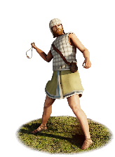
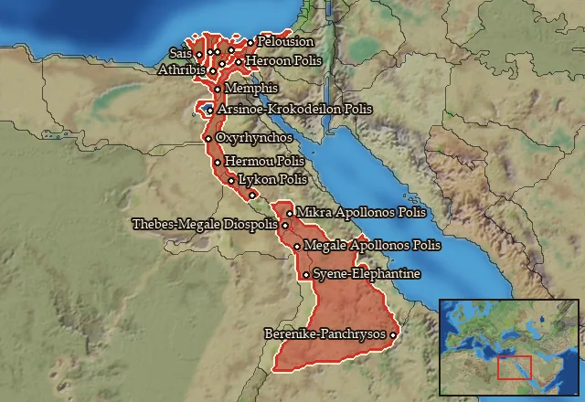

RTR: Imperium Surrectum
RTR: Imperium SurrectumEgyptian Slingers


Class: missile · Category: infantry · Men per unit: 40
Description
Egyptians do not favour the sling as much as some of their Semitic neighbours. However, these native Egyptian slingers are ready to make use of it to serve their pharaoh. Recruits are comprised of poorer farmers and shepherds who learned to use the weapon to protect their herds and flocks from predators. They wield a simple sling made from woven thick plaited cord and shoot almond-shaped lead bullets at the enemy. Egyptian slingers have no armour, wearing only simple chitons or quilted tunics, and possibly a quilted cap. They are unable to combat unbroken infantry or cavalry, having only a dagger to defend themselves if forced into a melee. Their role on the battlefield is to support the heavier infantry, peppering the enemy with missile fire, protecting their flanks, and pursuing any routing foes.
Historical background
The sling is an ancient weapon, and the Egyptians are an ancient people. However, while the sling was present in the ancient near east, Pliny even attributing its creation to the Syrophoenicians (Plin. Nat. 7.57), Egypt did not have a strong tradition of slingers. Slings rarely appear in early Egyptian art, and depictions from Beni Hasan from the middle kingdom put the slings in the hands of Syrians. Indeed, the weapon seems to have been more popular among the kingdom’s Semitic neighbours. This lack of evidence of early Egyptian slingers has led some scholars to argue that the slingers used by Egypt in accounts of naval battles from the end of the New Kingdom and at the siege of Hermopolis during the Late Period, must have been auxiliaries or mercenaries (Flinders, Tools and Weapons (1917), p. 36; Echols, The Ancient Slinger (1950), p. 229).
The Hellenistic period brought Makedonians and Greeks to Egypt, and the role of Native Egyptians in warfare changed. They still participated in various ways, perhaps most evidently at the battles of Gaza (312 BC) and Raphia (217 BC). However, in both these instances, the authors do not list slingers among the Ptolemaic forces, let alone the Egyptian contingents. Several lead sling bullets marked with the thunderbolt of Zeus have been found in Egypt dated to this period, however, but these may have been left behind by Antiochus IV during his invasion in 171 BC (Flinders (1917), p. 36). Finally, in his account of the Alexandrian War (47 BC), Julius Caesar describes Alexandrians using slings to fend off his troops from their camp near the city. They ultimately failed, and the Romans entered the camp (Caes. Bell. Alex. 30). Native Egyptians could have been among these defenders. Altogether, this led to RIS opting to include this simple missile unit to flesh out the native Egyptian roster.
Stats
| Rank in roster | Rank in roster | Rank in roster | Rank in roster | ||||||||
|---|---|---|---|---|---|---|---|---|---|---|---|
| Men per unit | 40 | ███······· 31% | Attack | 5 | █········· 0% | Charge bonus | 0 | █········· 0% | Defence | 15 | █········· 8% |
| · armour | 6 | ████······ 39% | · defence skill | 9 | █········· 3% | · shield | 0 | █········· 0% | Morale | 5 | █········· 4% |
| Discipline | Low | Training | Untrained | Recruitment cost | 890 dn | █········· 3% | Upkeep per turn | 326 dn | █········· 10% | ||
| Turns to recruit | 2 |
Weapons
| Primary | Secondary | Primary | Secondary | Primary | Secondary | Primary | Secondary | ||||
|---|---|---|---|---|---|---|---|---|---|---|---|
| Attack | 5 | 2 | Charge bonus | 0 | 0 | Type | missile · archery | melee · simple | Damage | blunt | piercing |
| Projectile | stone | — | Range | 140 | — | Ammunition | 35 | — |
Defence
| Primary | Secondary | Primary | Secondary | Primary | Secondary | Primary | Secondary | ||||
|---|---|---|---|---|---|---|---|---|---|---|---|
| Total | 15 | — | Armour | 6 | — | Defence skill | 9 | — | Shield | 0 | — |
Condition and terrain
| Hit points | 1 | Ground: scrub / sand / forest / snow | 0 / 0 / 0 / 0 | Charge distance | 30 | Formations | Square |
Technical stats
| Time between blows (primary / secondary) | 2.5 s / 2.5 s | Extra fatigue in hot climates | -2 | Collision mass per man (1.0 is normal) | 0.91 | Spacing between men: close / loose | 1.2 × 2.8 m / 2.16 × 5.04 m |
| Default ranks | 5 |
In battle: Can hide in long grass · Very good stamina
Who can recruit it
A core roster unit for one faction, which can raise it anywhere it holds the right building:
Any faction holding one of the provinces below can field it.
Exactly what a settlement must have, route by route (4)
| Building | Also requires | Building | Also requires | Building | Also requires | Building | Also requires |
|---|---|---|---|---|---|---|---|
| Any settlement | Garrison Building or Tier 1 Military Industrial Complex · Egyptian area of recruitment · Any Government (Dependency, Indirect Rule or Direct Rule) · Tier 2 Colony not built | Indirect Rule | Garrison Building or Tier 1 Military Industrial Complex · Tier 1 Colony | Direct Rule | Garrison Building or Tier 1 Military Industrial Complex · Tier 1 Colony | Homeland | Garrison Building or Tier 1 Military Industrial Complex |
Areas of recruitment

| Zone | Provinces | ||||||
|---|---|---|---|---|---|---|---|
| Egyptian | 19 |